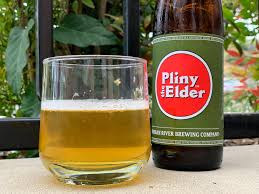

<!doctype html>
<html>
<head>
<meta charset="utf-8">
<title>BEER</title>
</head>

<h1><strong>BEER</strong></h1>
<body>
<h2><strong>News Feed</strong></h2>
	<p style="color:red"><em>Read All About It!</em></p>
<a href="https://www.si.com/extra-mustard/2022/09/03/florida-gators-sell-beer-honoring-steve-spurrier-hbc-1966-lager/"><b>Gators to Sell Beer Honoring Steve Spurrier at Football Games</b><br>
Sports Illustrated<br>
5 hours ago</a>
<p></p>
<p><a href="https://finance.yahoo.com/oktoberfest-under-occupation-first-palestinian-114714384.html?guccounter=1&guce_referrer=aHR0cHM6Ly93d3cuZ29vZ2xlLmNvbS8&guce_referrer_sig=AQAAANBA3tfJzWH9GUXw2QKxJ6lCKphhogXoeIsRA7wCwkXt15SgZYBrSidqHQfoxnJHyozMv7bJRfaO28Vta4InCNIn-5oxWSYDU8n26FRHYOL8RHlNi4CBNqdXeywJPt9vyaFqJignW1ut2f6gD0xAcOMEHd6p4YZNXgKqU_qIyzZn/"><b>Octoberfest Under Occupation: First Palestinian Female Brewer</b><br>
  France24.com<br>
  8 hours ago</a></p>
<p><a href="https://www.pennlive.com/pennstatefootball/2022/09/you-may-soon-be-able-to-buy-a-beer-at-penn-state-football-games.html?outputType=amp/"><b>You May Soon Be Able to Buy a Beer at Penn State Football Games</b><br>
  The Philadelphia Inquirer<br>
  10 hours ago</a></p>
<p><a href="https://www.americancraftbeer.com/beer-prices-at-every-nfl-stadium-in-2022/"><b>Beer Prices At Every NFL Stadium In 2022</b><br>
  American Craft Beer<br>
  1 day ago</a></p>
<br>
<div>
<h2><strong>Events</strong></h2>
<p style="color:red"><em>Save the Dates!</em></p>
<p><a href="https://www.craftbrewersconference.com/home"><B>Craft Brewers Conference & BrewExpo America</b><br>
  Minneapolis, Minnesota<br>
  May 2-5,2022</a></p>
<p><a href="https://www.homebrewcon.org/?gclid=Cj0KCQjwpeaYBhDXARIsAEzItbG3qRz7qVEl_de7OTZnWlpCICGM0WYE88hYLtV1LXwvl6SGhcFGFH8aAlgpEALw_wcB"><b>Homebrew Con</b><br>
  Pittsburgh, Pennslyvania<br>
  June 23-25, 2022</a></p>
	<p><a href="https://www.greatamericanbeerfestival.com/"><b>Great American Beer Festival</b><br>
  Denver, Colorado<br>
  October 6-8, 2022</a></p>
	<p><a href="https://sanantoniobeerfestival.com/"><b>San Antonio Beer Festival</b><br>
  San Antonio, Texas<br>
  Saturday, October 15, 2022</a></p>
<br>
<h2><strong>Brewer's Picks</strong></h2>
<p style="color:red"><em>What We're Drinking!</em></p>
<p></p>
<p><strong>Pliny the Elder Double IPA</strong></p>
<p><a href="https://www.russianriverbrewing.com/pliny-the-elder/">Russian River Brewing Company Pliny the Elder</a></p>
<p>Santa Rosa, California<br>
  Brewed with Amarillo, Centennial, CTZ, and Simcoe hops. It is well-balanced with malt, hops, and alcohol, slightly bitter with a fresh hop aroma of floral, citrus, and pine.</p>
<blockquote cite="https://www.mensjournal.com/food-drink/the-50-greatest-beers-in-the-world/index.html"> <strong>"The stuff of legends, this double IPA can be a hard find, but is arguably one of the best beers in the world."</strong><br>
  Men's Journal - The 50 Greatest Beers in the World 2022
  <p></p>
  
  <p><strong>Chang Espresso Lager</strong></p>
  <br>
  <a href="https://www.changbeer.com/chang-espresso-lager-wins-at-the-world-stage-for-fine-flavours-and-true-asian-design/?lang=en">Chang Espresso Lager</a>
  <p>Brewed from world-class ingredients including malt, hops, and quality fresh water, Chang Espresso Lager is blended with Asia’s homegrown coffees, a special blend of roasted Arabica and Robusta, all from coffee growers in Thailand, Laos, and Vietnam.</p>
  <p><strong>2021 World Beer Awards</strong><br>
  </p>
  <p>Gold, Best Flavored Beer</p>
</blockquote>
<br>
<h2><strong>REFERENCE</strong></h2>
<p style="color:red"><em>Check Out These Reference Sites From Our Friends!</em></> </p>
<p><a href="https://beerconnoisseur.com/articles/beer-101-fundamental-steps-brewing">Making Beer</a></p>
<p><a href="https://www.northernbrewer.com/blogs/beer-recipes-ingredients/grain-guide#grain_guide">Grains Guide</a></p>
<p><a href="https://www.hopslist.com/">Hops Guide</a></p>
<p><a href="https://beerandbrewing.com/brewing-water/">Brewing Water</a></p>
<p><a href="https://www.craftbeer.com/beer-styles/">Beer Styles</a></p>
<p><a href="https://www.bjcp.org/bjcp-style-guidelines/">Beer Judge Guidelines</a> </p>
<p>Contact Us@Nowhere Man in Nowhere Land, USA</p>
<p>Copyright Pompeii</p>
</body>
</html>
